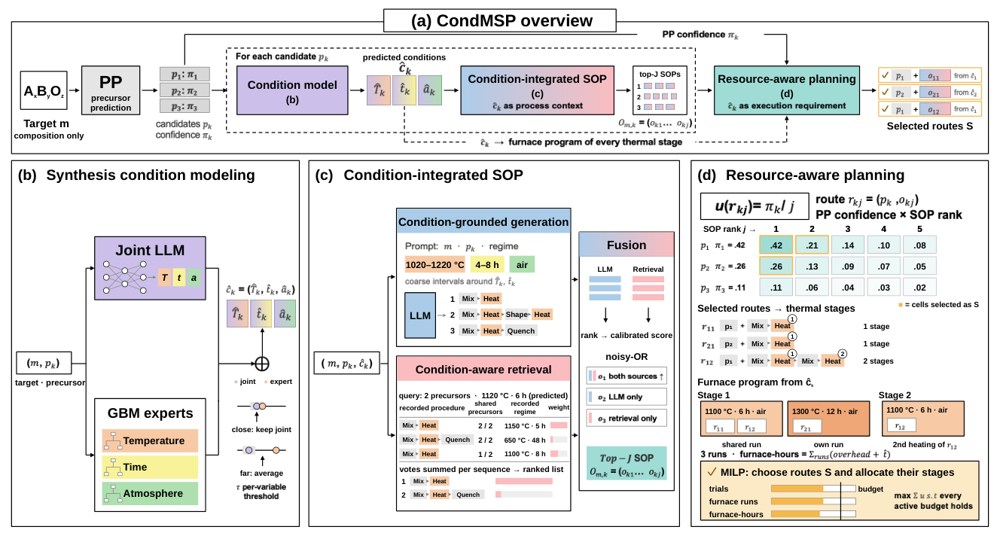

CondMSP：把“预测一份合成配方”推进到“有限炉次下，先做哪些路线”
论文原文 ↗原文：Heewoong Noh、Gyoung S. Na、Elton Pan、Namkyeong Lee、Chanyoung Park，CondMSP: Condition-Informed and Resource-Aware Inorganic Materials Synthesis Planning，arXiv，2026 年 10 月。 官方页面 · 原始 PDF
AI 能提出目标材料，下一步却仍要回答很具体的问题：用什么前驱体，先混合还是先加热，要不要压片、淬火或再退火，温度和时间怎么选？即便模型给出了几十条候选路线，实验室也未必有足够炉次逐一尝试。两条路线若能放进同一炉处理，实际设备成本又与分开做完全不同。
CondMSP 关注的就是这两层衔接。**先把预测的合成条件用来组织路线，再让条件决定路线怎样共享设备，从而选择有限资源下值得尝试的一组方案。**温度、时间和气氛在这里有双重身份：既是帮助模型理解“正在进行哪类工艺”的上下文，也是安排实验时的资源要求。
一、为什么把配方拆开预测还不够
无机材料合成中，前驱体、操作和条件相互牵连。同一目标组成可以从不同起始物出发；同样的起始物，在不同温度与气氛下又可能形成不同产物。旧方法常分别预测前驱体、操作序列和条件，较新的方法也会把其中两项连起来，但通常仍以给出候选配方为终点。
作者提出两个进一步的问题。第一，既然高温处理与烧结等操作相关，为什么不先预测工艺条件，再用这些条件帮助选择操作？第二，若一种目标材料有十组候选前驱体，每组又有多种操作顺序，为什么始终围绕排名第一的前驱体继续试，而不比较不同分支中最值得做的路线？
对于批量炉处理，这种比较尤其必要。一条路线要做两次热处理，便需要两个阶段的设备容量；另一条路线虽然单独排名稍低，却可能与已有候选同炉处理。此时，挑选下一条路线的成本取决于已经选了什么。
二、方法怎样把组成、条件、路线和炉次接起来

图1｜CondMSP 的整体流程（原文 Figure 1）。a 从目标化学式出发，建立多组前驱体分支；b 联合语言模型与数值专家预测条件；c 在条件引导下生成和检索操作序列；d 将路线选择与热处理阶段的炉次分配一起优化。图中的配方和数字是流程示意。
1. 先提出前驱体，再为每个分支预测工艺条件
输入是目标材料的化学式，不要求输入晶体结构。已有的 MSP-LLM 前驱体模型首先输出排名前十的候选结果；程序合并表示同一个无序前驱体集合的重复输出，并累计相应模型分数，得到每组起始物的相对支持程度。CondMSP 沿用这部分模型，新的方法从各组前驱体之后展开。
对每个“目标组成—前驱体集合”，条件模块预测三个量：最高加热温度、最长加热时间，以及空气或非空气气氛。这个模块由两类模型配合完成。
一类是经过合成数据微调的语言模型，同时输出温度、时间和气氛，学习它们之间的联系。另一类是三个独立的梯度提升树专家：这是一组逐步修正预测误差的树模型，接收由元素性质统计得到的组成描述符，分别处理温度、时间和气氛。时间跨越的范围很大，时间专家在对数尺度学习；气氛专家则专门处理空气与非空气类别的数量不均衡。
两类预测相近时，采用语言模型结果；差异超过验证集确定的阈值时，将二者平均。这样，联合模型对工艺语境的学习，与数值模型对误差尺度的处理结合起来。训练条件模型使用 27,110 条至少包含一种条件标注的记录，缺少的字段在训练输出中直接省略，因此不必只保留温度、时间和气氛全部齐全的配方。
2. 条件同时引导“生成新操作”和“寻找相似旧操作”
条件预测完成后，操作预测分成两条路。
生成路径把目标、前驱体和预测条件一起交给经过微调的语言模型，产生操作序列。操作词来自七个标签：混合、加热、烧结、成形、干燥、淬火和退火。为了向模型描述工艺范围，连续预测值会写成较粗的区间。例如图1中，1120 ℃、6 h 被写成 1020—1220 ℃、4—8 h。模型据此提出“混合→加热”或“混合→加热→成形→再次加热”等候选。
检索路径从训练配方中寻找与当前方案共享前驱体的记录。共享起始物越多，记录提供的支持越强；但若一个旧配方在 650 ℃ 保温 48 h，而当前预测是 1120 ℃、6 h，两者的工艺差别也应影响参考价值。因此，检索权重随温度差和对数时间差连续衰减。图1c中，共享两种前驱体且条件接近的配方，比同样共享两种前驱体但条件相差很大的配方获得更高权重。
这两条路径分别利用模型学到的模式和已有实验配方。融合时，作者先在验证集上把各自的名次映射成可比较的分数，再合并排序；同一操作序列得到两边共同支持时，排序会提高。每组前驱体最后保留最多 30 种操作序列。
语言模型的可训练部分采用 LLaMA-3.1-8B-Instruct 的轻量微调；条件模型先训练并固定，再为操作模型的训练和实际使用提供预测条件。前驱体模型、条件模型和操作模型因此各有明确分工。
3. 将每条路线拆成热处理阶段，选择能在预算内完成的一组路线
一组前驱体与一条操作序列合起来，就是一条候选路线。作者用一个简单的共同尺度比较不同分支：前驱体集合的模型支持分数，除以该分支内操作序列的名次。这样既考虑起始物是否受到模型支持，也逐步降低较靠后操作方案的优先级。
如果预算只限制实验次数，每条路线都占一次实验，按这个效用分数选择即可。若预算限制炉次或占炉时间，问题就多了一层：路线能否同炉？
程序把每个“加热、烧结或退火”操作算作一个热处理阶段。对于同一前驱体分支，各阶段采用该分支预测的最高温度、最长时间与气氛。主实验设定中，阶段位置相同、预测温度和时间相同、气氛类别相同的样品，可以共享一炉，容量最多八个样品；每炉占用时间是预测保温时间加两小时设备开销。一次路线如果包含两段热处理，必须为两段都安排容量。
图1d的例子很直观：第一条与第三条路线的第一段都是 1100 ℃、6 h、空气，可以共享一炉；第二条的 1300 ℃、12 h 要另开一炉；第三条还有第二段热处理，需要再安排一炉。路线选择与炉次分配由混合整数线性规划一起求解——即用一组表示“是否选择这条路线”和“安排几炉”的变量，在预算约束内最大化所选路线的总效用。
输出因此是一组被选中的路线及其热处理安排。这个步骤针对每种目标材料一次性制定计划，评价采用历史文献配方与模拟设备预算。
三、主要结果：条件改善候选，分配提高有限预算内的配方覆盖
条件预测怎样帮助后面的操作序列
作者先分别检查条件与操作预测。主数据按目标材料划分训练、验证和测试，操作与规划评价包含 918 种测试目标。联合模型与专家结合后，最高温度的平均绝对误差为 131.77 ℃，优于单独联合语言模型的 138.68 ℃ 和独立专家的 143.42 ℃；时间预测的平均绝对误差为 12.43 h，空气/非空气预测的宏平均 F1 为 64.58%。
更关键的是，这些预测能否提高操作候选的质量。作者在这一步向各方法提供文献中的前驱体，单独比较操作序列。Top-30 精确匹配率表示前三十个候选中是否包含与文献完全相同、顺序也相同的操作序列。MSP-LLM 为 46.51%，CondMSP 提高至 49.06%；Top-10 则从 30.28% 提高到 34.24%。
生成和检索都从条件中获益：只给生成模型加入条件，Top-30 达到 47.89%；只用带条件权重的检索为 47.82%，融合后达到 49.06%。这对应论文的第一层主张：把工艺条件先显式组织出来，能帮助后续提出更合适的操作备选。
相同实验预算下，能否选中文献中的整条路线
完整规划从预测前驱体开始，最终要求前驱体集合与有序操作序列同时匹配同一份文献配方。作者称之为参考配方恢复率。
| 每个目标的资源预算 | MSP-LLM | CondMSP |
|---|---|---|
| 30 次候选路线尝试 | 34.68% | 40.01% |
| 3 次模拟炉运行 | 27.89% | 32.90% |
| 48 h 模拟占炉时间 | 27.92% | 31.99% |
这些改善来自两个环节。其一是条件感知方法提出了更好的候选；其二是预算不再全部耗在排名第一的前驱体分支上。主测试中，前驱体第一名出错的 236 个目标里，有 186 个能在前十候选中找到文献前驱体，跨分支分配便有机会利用这些备选。
在相同的 CondMSP 候选池上，30 次尝试若按前驱体名次逐个分支往下做，恢复率为 37.07%；按共同效用选择则达到 40.01%。在三次模拟炉运行下，单纯按效用由高到低、能塞下就加入的贪心方案达到 30.25%，联合选择和炉次分配达到 32.90%。这说明，候选的优先级和候选之间的设备共享关系，都会影响有限预算最终覆盖到哪条路线。
换到氧化物比例更低的材料集合，优势仍然保留
作者另外整理了 2,344 种新目标材料、2,482 份参考配方，直接应用已经训练好的流程。该集合的配方中，含氧目标的比例由训练集的 92.5% 降到 32.6%，全部使用单质前驱体的配方则从 6.6% 增到 64.6%，因此检验的不只是相同材料分布内的预测。
在只有一份参考配方的 2,236 种目标上，30 次尝试的恢复率从 MSP-LLM 的 20.63% 提高到 27.55%；具有多份参考配方的 108 种目标上，从 44.75% 提高到 49.07%。按化学类别看，非含氧目标的相同预算恢复率从 17.47% 提高到 25.44%。这与摘要强调的第三项结果一致：收益能够延续到与氧化物主导训练集不同的化学组成。
四、这项工作新增了什么能力
CondMSP 的关键推进，是把合成条件从配方末端的一组待填数字，变成连接路线构建与资源分配的中间层。同一组温度、时间和气氛预测，先解释应当考虑怎样的操作，再规定这些操作怎样占用炉子。
它也把两个经常混在一起的问题分开处理：模型提出哪些路线，以及实验预算应该投给哪些路线。前者依赖语言模型与已有配方；后者显式考虑不同前驱体分支的支持程度和设备共享成本。最终比较的是一组资源受限的计划，而非一条独立配方的排名。
对于 AI 驱动材料合成，这提供了一个具体的规划接口：上游给出目标组成和备选起始物，下游获得带工艺要求、可在给定资源模型中安排的一组路线。作者将其定位为未来多目标、实验反馈式合成规划器可以调用的单目标分配步骤。
原始摘要完整中文翻译
材料合成规划（MSP）通过为目标材料提出前驱体、合成操作和加工条件，将 AI 驱动的材料发现连接到实验实现。现有方法分别预测这些组成部分，或将它们两两联合预测，并仅把条件视为预测目标。因此，MSP 仍以配方预测为中心：它尚未探索条件怎样作为工艺上下文来构建合成路线，也没有解决在实验资源有限时应该执行哪些候选路线的问题。
我们提出 CondMSP，将 MSP 从配方预测扩展到考虑执行的规划。CondMSP 将联合预测器与变量专属专家相结合，预测温度、时间和气氛，随后同时以两种方式使用这些预测：将其作为工艺上下文，为操作序列的生成和检索提供依据；将其作为执行要求，规定哪些热处理阶段可以共享一次炉运行，以及相应成本是多少。这套规定在所有比较方法之间保持固定。在这一共同设定下，CondMSP 使用统一效用对不同前驱体集合的路线进行排序，并在炉资源预算下，通过约束优化联合选择路线和分配其热处理阶段。
CondMSP 改善了条件和操作预测；在这一共同约束下，每个目标允许三次模拟炉运行时，参考配方恢复率从 27.9% 提高到 32.9%，允许三十次尝试时从 34.7% 提高到 40.0%。同时，一个包含 2,344 种目标材料的新评价集，支持了其向氧化物占主导的训练化学范围之外的泛化。